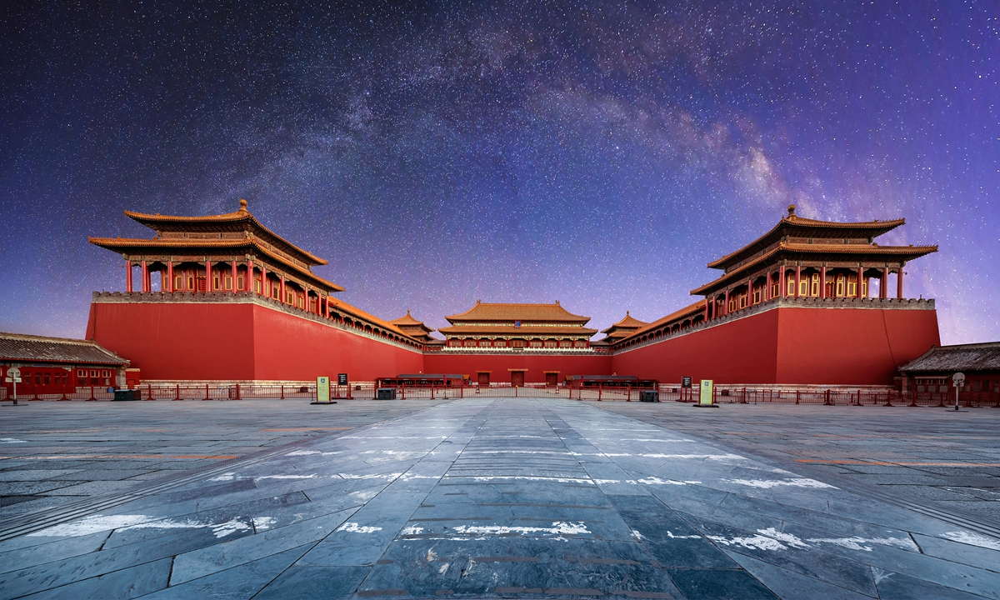
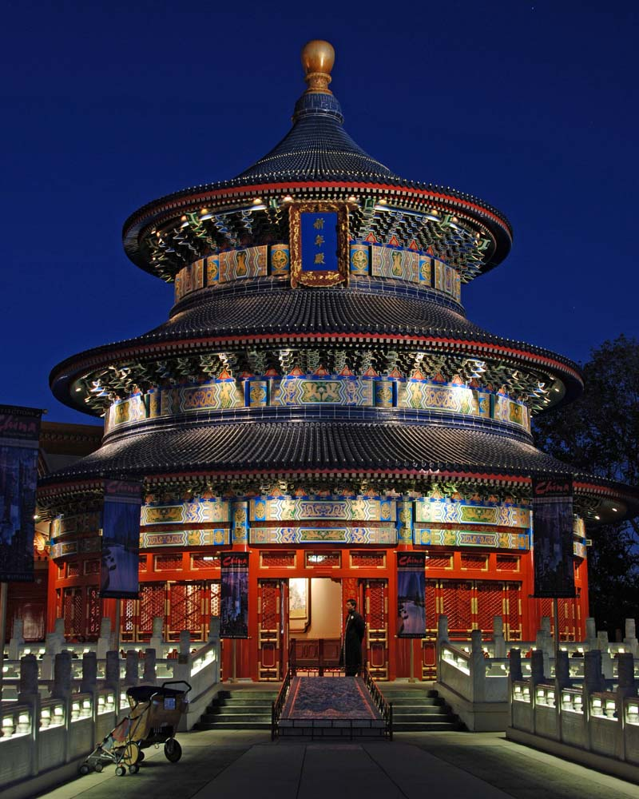
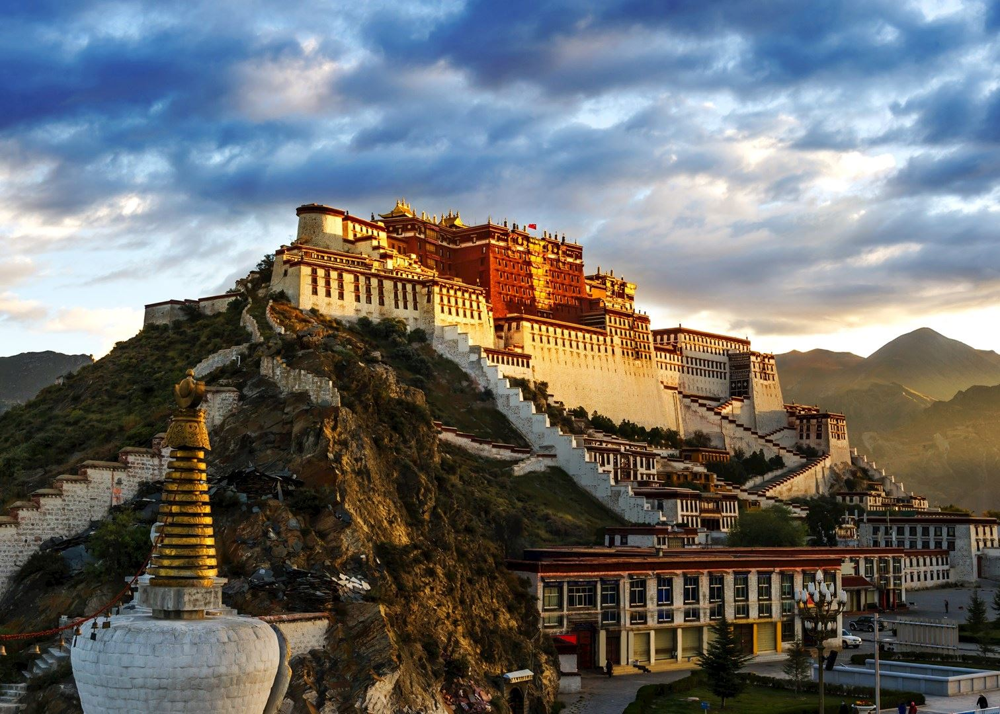
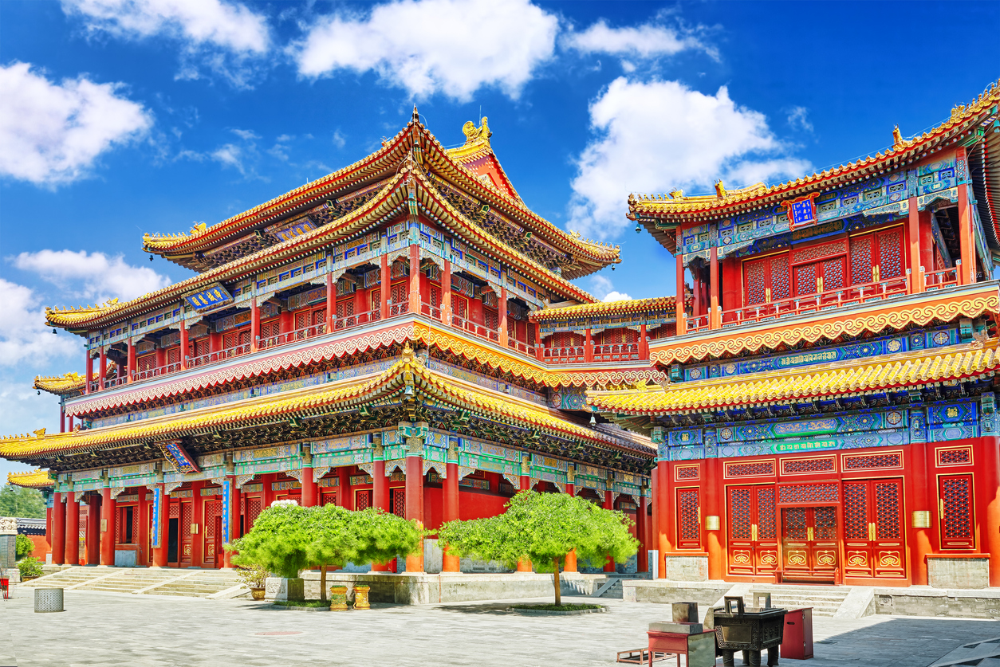

CHINA
THE GREAT WALL
The Great Wall of China (traditional Chinese: 萬里長城; simplified Chinese: 万里长城; pinyin: Wànlǐ Chángchéng) is a series of fortifications that were built across the historical northern borders of ancient Chinese states and Imperial China as protection against various nomadic groups from the Eurasian Steppe. Several walls were built from as early as the 7th century BC,[4] with selective stretches later joined together by Qin Shi Huang (220–206 BC), the first emperor of China. Little of the Qin wall remains.[5] Later on, many successive dynasties built and maintained multiple stretches of border walls. The best-known sections of the wall were built by the Ming dynasty (1368–1644).

FORBIDDEN CITY
The Forbidden City was constructed from 1406 to 1420, and was the former Chinese imperial palace and winter residence of the Emperor of China from the Ming dynasty (since the Yongle Emperor) to the end of the Qing dynasty, between 1420 and 1924. The Forbidden City served as the home of Chinese emperors and their households and was the ceremonial and political center of the Chinese government for over 500 years. Since 1925, the Forbidden City has been under the charge of the Palace Museum, whose extensive collection of artwork and artifacts were built upon the imperial collections of the Ming and Qing dynasties. The Forbidden City was declared a World Heritage Site in 1987.[3]

TEMPLE OF HEAVEN
The Temple of Heaven (Chinese: 天坛; pinyin: Tiāntán) is an imperial complex of religious buildings situated in the southeastern part of central Beijing. The complex was visited by the Emperors of the Ming and Qing dynasties for annual ceremonies of prayer to Heaven for a good harvest. The Temple of Heaven was inscribed as a World Heritage site in 1998 and was described as "a masterpiece of architecture and landscape design which simply and graphically illustrates a cosmogony of great importance for the evolution of one of the world's great civilizations..." as the "symbolic layout and design of the Temple of Heaven had a profound influence on architecture and planning in the Far East over many centuries."[1]

POTALA PALACE
The palace is named after Mount Potalaka, the mythical abode of the bodhisattva Avalokiteśvara.[1] The 5th Dalai Lama started its construction in 1645[2] after one of his spiritual advisers, Konchog Chophel (died 1646), pointed out that the site was ideal as a seat of government, situated as it is between Drepung and Sera monasteries and the old city of Lhasa.[3] It may overlay the remains of an earlier fortress called the White or Red Palace on the site,[4] built by Songtsen Gampo in 637.[5]

LAMA TEMPLE
The complex consists of six temples originally occupied by the brother of the ruler the Eighth Bogd Jetsun Dampa Khan, Choijin Lama Luvsankhaidav, who was the state oracle and 'Precious Wisdom and Clear Devotion' Khutugtu at the time. The complex was begun in 1904 and completed in 1908, in honor of the State Oracle Lama Lubsanhaidub /Losang Kedrup/, brother of the eighth Bogd Khan.[1] The Choijin Lama Museum was originally a Buddhist temple complex, consisting of one main and five branch temples.[2] It was active until 1937, when it was closed during the height of Communist repression against Buddhism and other religious traditions.[3] In 1938 the complex was re-established as museum due to skillful efforts of wise people. This was how it was saved throughout communism.
